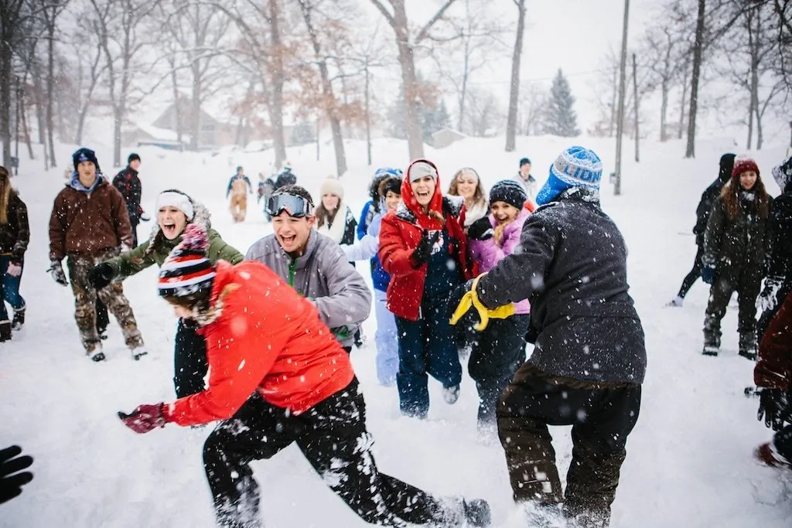
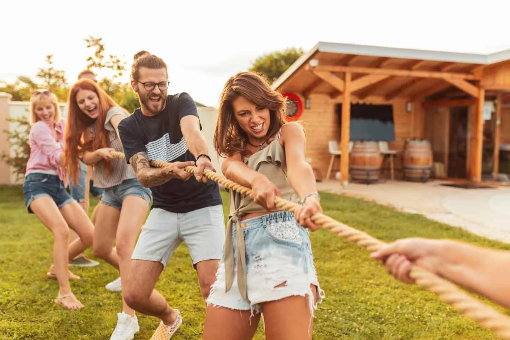
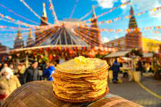
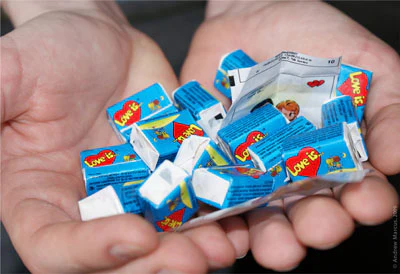

29 დეკემბერს მოეწყო შეჯიბრება თოვლით
გუნდაობაში. მხიარული აქტივობის შემდეგ,
ახალგაზრდებმა მოაწყვეს საახალწლო საღამო,
სადაც ერთმანეთს გაუმასპინძლიდნენ ცხელი
კოკტეილებით და საშობაო ორცხობილებით.
ამას მუსიკალურად აფორმებდა ორგანიზატორების
ჯგუფი(ანუ ჩვენ).

2 იანვარს, რიყის პარკში,
მოეწყო მხიარული შეჯიბრება.
მონაწილეობას იღებდნენ თბილისის
სხვადასვხა უბნის ახალგაზრდები.
გამარჯვებულებს გადაეცათ სასაცილო
პრიზები

ეწყობა შეჯიბრება ბლინების ცხობაში,
მონაწილე გუნდებს, გთხოვთ დარეგისტრირდეთ
15 თებერვლამდე. გუნდებში წევრების
მაქსიმალური რაოდენობა უნდა იყოს 3 ადამიანი
გამარჯვებულ გუნდს გადაეცემა სამახსოვრო საჩუქარი

ვალენტინობა ახლოვდება.
მოგვწერეთ თქვენი გაცნობის
ისტორიები. ყველაზე უცნაური
ისტორიის მქონე წყვილებს
გამოავლენს ჟიური.
გამარჯვებულებს გადაეცემათ
ჩვენი პარტნიორი ორგანიზაციების
საჩუქრები.